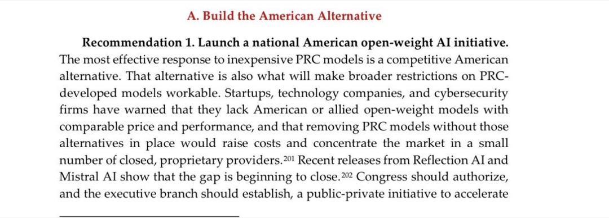

本期速览
01 深入理解AI Agent更新3.0版
03 Claude黎曼猜想Lean证明遭质疑
05 Agent验证五法降低验收成本
07 GLM-5.4循环层实现深推理
09 美众议院报告建议限用中国模型
10 特斯拉FSD用1B扩散模型生成画面
01｜深入理解AI Agent更新3.0版
来源（X） · @bojie_li · 2026-11-22 23:50
- 重写了各章节的大部分内容，消除了一些 AI 味，把综述式的文风改成了教学式的，更容易理解
- 新增 Jev 类决策模型在事件过滤、工具安全判断、评测 rubric、RAG 筛选、多模态信息稀疏化等方面的应用
- 新增 Meta Muse、Pine、dsh superagent 等 personal agent 的办事逻辑
- 新增 Multica、LobeHub 等办公 agent
- 新增 Anthropic 证明黎曼猜想、OpenAI 证明千禧年问题等科研 agent
- 修订语音交互部分，纳入一些最新的工作
- 重绘书中大量插图
- 新增社区翻译的蒙古语版本
- 合入社区的 30+ PR，解决 20+ issues
引用内容
Bojie Li @bojie_li
https://github.com/bojieli/ai-agent-book
全书围绕核心公式 Agent = LLM + 上下文 + 工具 展开，十章内容如下：
- 第 1 章 · Agent 基础知识：从"模型即 Agent"的新范式出发，建立 Agent = LLM + 上下文 + 工具 的核心公式，并引入 Harness 工程——模型之外的一切工程能力，才是真正的竞争力所在。
- 第 2 章 · 上下文工程：上下文决定 Agent 的能力上限。深入大模型 API 的上下文结构、KV Cache 友好设计、提示工程、动态提示词与 Agent Skills、状态栏元信息，以及上下文压缩策略。
- 第 3 章 · 用户记忆和知识库：让 Agent 跨会话记住用户、并接入外部知识。涵盖用户记忆系统、RAG 基础管道，以及超越扁平文本的知识组织与检索（结构化索引、知识图谱等）。
- 第 4 章 · 工具：工具是 Agent 的双手。讲工具分类与通用设计原则、MCP 协议与工具选择的挑战、感知/执行/协作三类工具，以及事件驱动的异步 Agent。
- 第 5 章 · Coding Agent 与代码生成：代码是"能创造新工具的工具"，是通用 Agent 的元能力。以生产级 Coding Agent 为例，展示这一最强通用工具的完整实现。
- 第 6 章 · Agent 的评估：把 Agent 的表现变成可比较的信号。从评估环境、数据集设计、指标体系，到统计显著性、可观测性、评估驱动选型，直至生产级内部评估与仿真环境。
- 第 7 章 · 模型后训练：预训练、SFT、RL 三阶段全景。何时选 SFT、何时选 RL，RLHF、算法比较、数据与环境，以及让模型学会工具调用、提升样本效率的前沿探索。
- 第 8 章 · Agent 的自我进化：不改权重也能成长。三种学习范式，从经验中学习、主动工具发现，到"从工具使用者到工具创造者"，让 Agent 从"聪明"走向"熟练"。
- 第 9 章 · 多模态与实时交互：把感知与行动从文本扩展到语音、GUI 与物理世界。语音三范式（级联/端到端全模态/全双工）、流式语音感知与合成、Computer Use 与机器人操作。
- 第 10 章 · 多 Agent 协作：群体的智能可以高于个体。多 Agent 分类框架、何时真正优于单 Agent、共享与不共享上下文的协作、失败模式，以及涌现的"Agent 社会"。
Repo: https://github.com/bojieli/ai-agent-book

02｜Agent防护需代码层硬熔断
来源（X） · @zcswl7961 · 2026-11-23 09:15
我顺手问了他一个线上真实发生过的问题：“如果 Agent 在多轮工具调用时，因为外部接口返回的脏数据陷入了无限自我修正循环，你的架构在哪个层级能强制把它掐断？”
他想了半天，回答说“可以在 Prompt 里限制它最多思考三次，不要一直重试”。
听到这种答案基本就不用往下聊了。模型推理是概率性的，根本不会严格数自己思考了几轮；没有代码层的最大步数硬限制（Max Steps）、Token 预算熔断和状态检测，一个异常请求就能在几分钟内把整条队列和 API 额度全打爆。
你们团队现在面试 AI 工程师，还遇到过哪些“把工程防护全寄托在提示词上”的回答？
03｜Claude黎曼猜想Lean证明遭质疑
来源（X） · @servasyy_ai · 2026-11-23 09:05
Claude 刷屏全网的黎曼猜想证明，刚刚遭遇重大翻车！
物理学家 Jenny Lorraine Nielsen 刚才公开提出实名质疑：Claude 辅助搞出来的整整 1700 万行 Lean 代码里，竟然存在一个被直接定义为“永远成立”的几何空条件！
最离谱的是，这个空条件一路顺风顺水，直接混进了最终证明……
也就是说，Lean 形式化编译器只管逻辑自洽，一路给废话打勾，整整 1700 万行全在空转！
难怪数学家连看都不看，合着这 25 万页全是在同义反复。
刚登上数学神坛，底裤这就直接被扒光了？？？😂

引用内容
myles bsi @mylesBaiM
物理学家、哲学家 Jenny Lorraine Nielsen 公开提出质疑
指出 Claude 辅助完成的 1700 万行 Lean 代码中，竟然存在一个被直接定义为永远成立的几何条件！
她声称，这个空条件一路进入了最终证明
Claude 这是刚登上数学神坛，就要跌落下来了？😱


04｜DreamCoder重做编码工作台
来源（X） · @xiaomovps · 2026-11-23 17:57
刚看了 Mario 推荐的文章，是 Mastering Emacs 作者闭关 15 个月做出来的 AI Coding Harness
发现大多数的 AI Coding harness 都是千篇一律的，但是这个 AI harness 还是特别有意思的，最简单的 它 UI 界面就非常有特色
我自己翻了一下内容，发现有几个设计确实戳中痛点了：
1、不再挤在终端里，也不做普通聊天框
作者直接吐槽，现在很多工具要么塞在窄终端里，要么 GUI 千篇一律左边列表右边对话框，DreamCoder 在浏览器里做了一套智能平铺窗口管理器，多个窗格会自动分配大小，放不下就收进隐藏栏，鼠标放上去就能实时预览
2、右上角状态小地图，专治多 Agent 并行乱套
平时开一堆 Agent 切来切去很容易乱，它给每个工作区配了个实时小地图，哪个窗格在干活会轻微闪烁，卡在权限审批会明显提示，跑完了直接变绿，一眼就能看清全部进度
3、Emacs 风格的纯键盘操作
内置命令面板和快速跳转，用 Alt+x、Alt+m 加 WASD 就能在各个窗格和工作区之间来回切，对话、终端、事件图谱和目标面板都能并排摆开，不用一直抓着鼠标点来点去
4、底层硬指标不错，还能一键导入 Pi 配置
用的是自研工具循环，作者介绍缓存命中率能到 99%，支持连续跑好几天，也能走 Docker 做沙箱隔离，而且直接支持一键导入 Pi、OpenCode 和 Codex 的配置，对 Qwen 3.8 27B、DeepSeek 这类本地开源模型也很友好
顺便提醒一句，作者在评论区说目前还不支持直连 Claude Code Max 订阅，主要还是走 API 或者本地模型，想试的朋友注意一下
全平台支持 macOS、Windows、Linux 和 Docker，看下来确实挺有下一代 IDE 的味道，我后面找时间装一个，把自己的 Pi 配置导进去实际跑一遍，好用的话再分享给大家


引用内容
Mario Zechner @badlogicgames
中文译文
推荐阅读 @mickeynp 的文章。dreamcoder 中有很多不错的想法。
https://www.masteringemacs.org/article/announcing-dreamcoder
原文
recommended reading by @mickeynp. many nice ideas in dreamcoder.
https://www.masteringemacs.org/article/announcing-dreamcoder
05｜Agent验证五法降低验收成本
来源（X） · @dotey · 2026-11-23 04:37
很多朋友都被 Agent 坑过：它信誓旦旦说做好了、验证完了，你信以为真，上线后发现压根没做好。被老板骂完回头找它，它认错态度很好，下次还是一样。
问题出在我们让它验证的方式上：Agent 不知道什么叫“做好了”，你也没有低成本的办法确认它真的做好了。分享五条我在用 Agent 做验证时的经验。
一、不要依赖对抗式验证
对抗式验证就是让另一个甚至多个 Agent 来检查结果，执行的 Agent 根据反馈改进，再检查、再改进，直到完成为止。
听起来很好，实际上经常无法收敛。尤其是不太聪明的模型，大部分时候是越改越糟，还浪费了很多 Token。
原因是缺少统一的验收标准。负责检查的 Agent 并不一定知道完整的上下文，也不知道准确的验收标准，于是自作主张提一堆意见，执行的 Agent 再照单全收，结果就越改越偏。
二、给出清晰的验收标准，再给一个能验收的环境
举个例子，你把设计稿交给 Agent，说：“帮我把这几个设计稿做成页面”，通常它会给你一个差不多的结果，有时候出入还很大。
换一个说法：“帮我把这几个设计稿做成页面，完成后请对网页截图，对比设计稿，要求像素一个都不要差”。这时候 Agent 做完不会轻易交差，它会截图，写工具对比截图和设计稿的像素差异，返工重做，直到像素真的一个都不差。
大部分时候我们并不需要一个像素都不差，有些偏差可以接受。重点是让它知道验收标准是什么，并且手里有办法自己去验。
三、越早验证，返工成本越低
尽早验证在传统软件工程里是常识，是大量血泪教训换来的。只是现在 Vibe Coding 让生成代码的成本大幅降低，非专业人士越来越多，大家渐渐忘了写代码之前还有三道关：
可行性分析：这个项目真的值得做吗？做出来会有人用吗？投入产出比合算吗？
原型开发：先做基本的交互，用模拟数据低成本做出一个可运行的原型，快速验证方向对不对，不对马上调整。现在 Agent 做原型已经很强了，比如 Claude Design（或者本地版的 https://github.com/jimliu/open-artifact），做出来的东西和最终结果看起来没什么差别，成本低得多，速度也快。
系统设计：技术选型、模块划分、数据结构、数据库设计、API Schema 这些。设计没做好，系统也能跑，但将来维护成本要高不少。Agent 能力虽然强，选的技术方案并不总是最好的。动手实现之前，先让它写一份技术方案文档，你大概看看：一方面帮你理解项目是怎么实现的，另一方面能及时纠正潜在问题，避免做完再返工。
四、让 Agent 提供证据，降低你的验收成本
人在 Loop 里是必不可少的，完全交给 AI，大概率只能收获 AI Slop。但人的验收能力是瓶颈，要确认的东西太多会很累。我最近用 Antigravity，跨 Workspace 每读一个文件都要我手工确认一遍，简直快崩溃了。
所以要把人确认的成本降到最低：能快速判断结果对不对，快速指出哪里有问题。
最简单的方式，是让 Agent 提供截图、录屏、可视化的 HTML 报告。Agent 在截图过程中自己也能发现一些问题，但截图最大的价值，是让人一眼就能看出问题。
想象一下，你是老板，员工来汇报工作，一页密密麻麻的 Word 文档和三页漂亮的 PPT，哪个更容易看？
我现在最常用的几个做法：
- 开发新功能，让它提供新功能的截图
- 修 bug，让它提供修改前和修改后的截图对比
- 让它自己模拟 API 响应数据，动态生成各种不同场景的截图，完全不需要服务端配合（虽然我还没搞明白它是怎么模拟的）
五、代码审查聚焦于真正的问题
Agent 生成代码的速度太快，瓶颈已经转移到了代码审查和验证上。代码审查不太可能完全靠人来做了，但人参与仍然有意义，只是方式要调整：
- PR 尽可能小。这样 Agent 审起来准确率更高，人也看得过来。
- 让 Agent 审，但不全信它的结论。审查结果要分级，人只盯 P0、P1 级别的问题，尤其是安全和性能问题，人工甄别一下，必要时让 Agent 解读、在本地验证。
- 细枝末节放过去。代码规范、最佳实践这类问题，不用太在意。
最后
这五条说的是同一件事：Agent 说的“做好了”不能直接当结论用，得让它变成你能检查的东西。
- 动手之前，告诉它什么叫做好了
- 动手之前，先用原型和方案文档把方向验一遍
- 做完之后，让它拿截图和对比来证明
- 你自己的精力，只花在最要紧的问题上

06｜T3 Code 统一多Agent订阅
来源（X） · @harrisonitsme · 2026-11-22 18:17
Gemini 4 好评如潮，订阅却被锁死在难用的 Antigravity 里。大家用反代绕过去，结果 magpie 这类项目第二天就被整批封号。
后来 Google 在官方论坛明确表态：只要运行官方原版 antigravity-acp、走它自带的登录，用于个人交互式开发，就是合规的。T3 Code 正是这么做的。
总结了下T3 的优势：
1、合法：别人走反代赌封号，它走官方通道，不用赌
2、不转卖 token：不额外收费，直接用你已有的 Claude / Codex / ChatGPT / Gemini 订阅
3、一个界面管所有 agent：Claude Code、Codex、Cursor、OpenCode、Antigravity 等全支持，对话中途还能切模型，让 Claude 把任务交接给 Codex
4、多端同步：桌面、网页、手机共享同一批 thread，手机上就能批准命令，人不在电脑前 agent 也能继续干活
5、内建 Git：每条 thread 独立 worktree，看 diff、commit、push、开 PR 一键完成
6、扩展快：基于 ACP 架构，新 agent 写个 adapter 就能接入，Gemini 4 一发布就跟上了
7、MIT 开源：约 7 万 star，代码和会话都在本地
适合：手上有多个 agent 订阅、想统一调度、需要用手机远程推进任务的人。
07｜GLM-5.4循环层实现深推理
来源（X） · @zhouG1n · 2026-11-23 18:28
1. 原生支持视觉（之前GLM系列只有flash有视觉，现在终于补上了）
2. 强化了编码之外的能力：3D着色器，视频，游戏，CAD建模
3. Loop Transformer 架构可以实现更深层推理（很多人反应有雷霆大思考）
引用内容
Z.ai @Zai_org
中文译文
隆重推出 GLM-5.4：基于我们首个 Loop Transformer 的广义编码能力。
- 对 GLM-5 基座模型的现有层进行循环，实现更深层推理
- 突破传统编码，扩展到视频、游戏、3D 着色器和 CAD 建模
- 增加视觉能力，实现更强的视觉编码
API 访问将在安全评估后开放。模型权重将负责任地发布。
技术博客：http://z.ai/blog/glm-5.4
原文
Introducing GLM-5.4: Generalized Coding with Our First Loop Transformer.
- Loops existing layers in the GLM-5 base model for deeper reasoning
- Pushes beyond traditional coding to video, games, 3D shaders, and CAD modeling
- Adds vision capabilities for stronger visual coding
API access will open after safety evaluation. Model weights will be released responsibly.
Tech Blog: http://z.ai/blog/glm-5.4
08｜Zapret本地改包绕过DPI审查
来源（X） · @0xbawan · 2026-11-21 23:06
俄罗斯人翻墙，竟然压根不用 VPN！！🤯
在俄罗斯技术圈，大家最推崇的根本不是传统代理，而是一款名叫「Zapret」的纯本地开源翻墙工具。
它的路子野到什么程度？
既不需要花钱买海外 VPS
也不用折腾任何机场订阅
更不依赖境外代理服务器
直接装在 Windows、Linux 或者 OpenWrt 软路由上就能本地开跑
核心原理说白了就是「本地硬刚」：
在网卡发包的那一瞬间，直接切分并修改网络数据包特征，精准干扰运营商的 DPI（深度包检测）设备，让审查系统看花眼，从而直接绕过部分网络封锁和限速。
对比一下两边的画风简直太真实了：
中国人翻墙，天天钻研 Reality、HY2 协议怎么伪装得滴水不漏，到处抢 VPS、测机场线路
俄罗斯人翻墙，连中转服务器都懒得搭，直接研究怎么在本地把审查设备给绕晕！
战斗民族果然是能正面解决问题，绝不跟你玩躲猫猫！！！🤣🔥
https://github.com/bol-van/zapret
09｜美众议院报告建议限用中国模型
来源（X） · @Xudong07452910 · 2026-11-23 08:31
作为中国 AI 从业者，看完心情挺复杂的。
一方面，报告等于在美国国会层面承认了中国开源的分量。过去一年 Hugging Face 上 41% 的下载来自中国模型，Airbnb 每天用 Qwen 处理约 8 万次客服对话，Cursor 的 Composer 2 基座是 Kimi。按公开价格，同样的用量美国闭源模型要贵 6 到 30 倍，企业说得很直白，选它就是因为又快又便宜。
另一方面，整份报告的基调是安全威胁。它把中国的进步很大一部分归因于蒸馏美国模型，建议禁止联邦系统使用中国模型，关键基础设施分阶段禁用，还建议把相关公司列进实体清单，限制拿美国芯片和算力。
美国开源也确实开始追了，报告点了 Meta、NVIDIA、Thinking Machines、Reflection 几家，还提出要搞一个国家级开源计划，提供公共算力。我感觉中国开源的优势在性价比和开放程度，这个窗口期不会一直在。
我更担心的是后面的算力限制。前几年卡被卡，反而逼出了更省算力的架构。如果限制从芯片延伸到云和算力服务，海外市场的路可能会更窄，接下来还得看国产卡能不能接上。
开源本来是大家一起往前走的事，现在越来越像被拉进大国博弈里了。
引用内容
clem 🤗 @ClementDelangue
中文译文
美国的研究人员、初创企业、非营利组织、政府、学生和业余爱好者，无论其来源如何，都从开源 AI 中获得了巨大收益。
对中国开源 AI 的最佳回应不是禁止它，而是构建更多美国的开源 AI！🇺🇸
很高兴看到一份新的美国众议院报告认识到这一点。感谢 @RepMoolenaar、@RepGarbarino 及其团队为此所做的工作！
我们需要更多开源，而不是更少！🤗
原文
American researchers, startups, nonprofits, government, students and hobbyists overwhelmingly benefit from open-source AI, wherever it comes from.
The best response to Chinese open-source AI isn’t to ban it, it’s to build more American open-source AI! 🇺🇸
Great to see a new US House report recognizing this. Thanks to @RepMoolenaar, @RepGarbarino and their teams for their work!
We need more open source, not less! 🤗

10｜特斯拉FSD用1B扩散模型生成画面
来源（X） · @DashHuang · 2026-11-23 07:40
想象一下，未来的 GTA 都能用这种方式玩，还要什么 3D 引擎。
传统的古法 3D 游戏制作流程，已经进入了历史的垃圾时间……
引用内容
Elon Musk @elonmusk
中文译文
如果有人好奇的话：
从去年开始，我们就已经有了一个大约像素级精确的世界模型，这对合成数据生成至关重要。
汽车上那个（小得多的）版本是条件均值流（mean-flow）模型，基于最近一系列 Tesla Universal Vision Encoder（UVE）特征，这些特征与输入到 3B 编码器模型中生成驾驶动作的特征是相同的。
我们从这些 UVE 特征分叉出去，然后运行一个单独的约 1B 扩散模型。它接收之前加入噪声的真实视角生成结果，然后将其去噪为当前的可视化。
然后它生成一小段视频（36 fps、8 帧图像，分辨率与 UI 屏幕一致）。这项工作由 1/2 个 TRIP 引擎在每个 18 Hz 的 UVE 帧上完成，并分布在 4 个周期中。
目前，由于算力限制，延迟有点高，但我们有办法在扩散 Transformer 层之间交错插入较新的 UVE 特征，从而将延迟大约削减 35%。
原文
In case anyone is curious:
We’ve had a ~pixel-perfect world model since last year, which is critical for synthetic data generation.
The (much) smaller version of that in the car is a conditional mean-flow model, based on the recent sequence of Tesla Universal Vision Encoder features, which are the same ones that are plugged into the 3B encoder model that produces the driving actions.
We fork off from these UVE features, then run a separate ~1B diffusion model. This takes in the previous reality-view generation with added noise and then denoises it to the current visualization.
It then produces a small video chunk (8 images at 36 fps, at the resolution of the UI screen). This work is done by 1/2 of a TRIP engine every UVE frame at 18 hz and is spread over 4 cycles.
Currently, the latency is a bit high due to compute constraints, but we have ways to interleave newer UVE features along the diffusion transformer layers to cut roughly 35% of the latency.